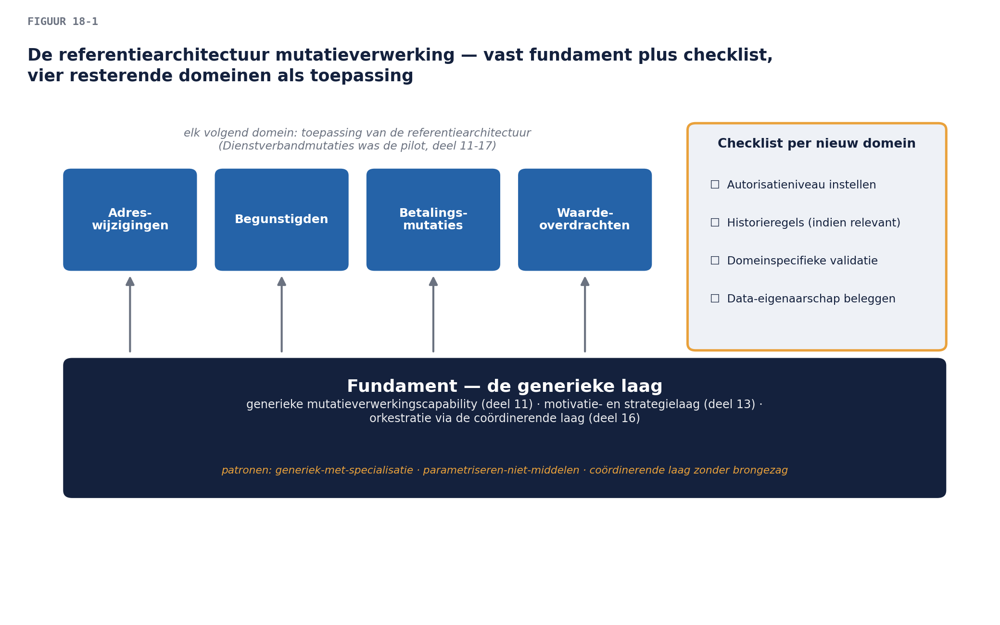

Business & Enterprise Architectuur — Niveau 2
Deel 18 · Reader — Architectuurpatronen en referentiearchitecturen
Positionering. Dit deel formaliseert wat u in deel 11-17 al toepaste (het generieke-met-specialisatie-patroon, orkestratie) tot herbruikbaar gereedschap: patronen en referentiearchitecturen die u niet opnieuw hoeft uit te vinden bij elk volgend domein — of bij het volgende programma na dit.
Leerdoelen
Na dit deel kun je:
- het verschil tussen een architectuurpatroon en een referentiearchitectuur benoemen en toepassen;
- de patronen die impliciet door niveau 1-2 liepen, expliciet herkennen en benoemen (generiek-met-specialisatie, coördinerende laag, parametrisering);
- een referentiearchitectuur opstellen voor de resterende mutatiedomeinen, gebaseerd op de pilot;
- een patroonbibliotheek positioneren binnen de Architecture Repository (niveau 1, deel 2, §6).
1. Casus: doe het niet opnieuw
Met de roadmap voor de resterende vier domeinen op tafel (deel 17), stelt een architect van een ander programma bij Meridiaan een vraag die het hele deel motiveert: “Wij starten volgend kwartaal een vergelijkbaar traject voor het declaratieproces bij Vermogensbeheer. Moeten wij dit allemaal opnieuw uitvinden?”
Het antwoord is nee — mits u vandaag vastlegt wát er herbruikbaar is, los van de specifieke Mutatieplatform-context. Dat is het verschil tussen een goed uitgevoerd project en een architectuurbijdrage aan de organisatie: het eerste lost één probleem op, het tweede maakt het volgende probleem goedkoper.
2. Patroon versus referentiearchitectuur
Een architectuurpatroon is een herbruikbare oplossingsvorm voor een terugkerend probleem, abstract genoeg om in veel contexten toe te passen — bijvoorbeeld “generieke kern met domeinspecifieke specialisaties” (deel 11) of “orkestratie via een coördinerende laag” (deel 16). Een patroon zegt niets over Meridiaan specifiek; het zou net zo goed bij een verzekeraar of een gemeente kunnen gelden.
Een referentiearchitectuur is concreter: een uitgewerkte, herbruikbare architectuur voor een specifieke soort oplossing binnen een specifieke context — bijvoorbeeld “de Meridiaan-referentiearchitectuur voor mutatieverwerking”, die de patronen toepast mét de concrete elementen (IAM-Suite, de generieke Mutatieverzoek-entiteit, de specifieke parametriseringsregels). Het volgende mutatieplatform-domein gebruikt de referentiearchitectuur direct; een heel ander programma (het declaratieproces) gebruikt misschien alleen de onderliggende patronen.
De vuistregel. Patronen reizen ver (andere organisaties, andere sectoren); referentiearchitecturen reizen dichtbij (dezelfde organisatie, vergelijkbare problemen). Beide horen in de Architecture Repository (niveau 1, deel 2, §6) — patronen in de Reference Library op generiek niveau, referentiearchitecturen dichter bij het organisatiespecifieke eind van het Enterprise Continuum.
3. De patronen van dit programma, expliciet gemaakt
Terugkijkend op deel 11-17, vier patronen die impliciet zijn toegepast en nu formeel worden vastgelegd:
- Generieke kern met specialisatie (deel 11, §3): een gedeeld, abstract patroon achter meerdere concrete varianten, met de specialisaties als parameters of uitbreidingen — niet als aparte, losse implementaties.
- Parametriseren in plaats van middelen (deel 11, §4.2): bij botsende requirements tussen varianten, een instelbare parameter met eigenaarschap bij de business, in plaats van één compromisinstelling voor iedereen.
- Coördinerende laag zonder brongezag (deel 16, §2.2): een generiek model dat status volgt zonder zelf bron te worden — het behoudt bestaande bronregistraties intact.
- Orkestratie bij centrale coördinatiebehoefte (deel 16, §3): wanneer het overzicht en de samenhang het doel zíjn, kiest u centrale coördinatie boven losse koppeling — met de erkenning dat de omgekeerde keuze in een andere context (veel onafhankelijke consumenten) net zo valide is.
Elk patroon krijgt in de patroonbibliotheek een vaste beschrijving: naam, probleem dat het oplost, de oplossingsvorm in abstracte termen, wanneer het wél en niet past (context), en een verwijzing naar waar het al is toegepast (Mutatieplatform als eerste precedent).
4. De referentiearchitectuur voor mutatieverwerking
Voor de resterende vier domeinen (en toekomstige, vergelijkbare programma’s) legt u de referentiearchitectuur vast: de generieke laag (uit deel 11, 13, 16) als vast fundament, met per nieuw domein een vaste checklist van te specialiseren onderdelen (autorisatieniveau, historieregels indien relevant, domeinspecifieke validatie) in plaats van een blanco ontwerpvraag. Dit is precies het instrument dat de leercurve uit deel 17 (§3) operationaliseert: niet “we worden vanzelf sneller”, maar “hier is de checklist die het volgende domein direct kan volgen”.

5. Samenvatting
- Patronen zijn abstracte, ver reizende oplossingsvormen; referentiearchitecturen zijn concrete, dichtbij reizende uitwerkingen binnen één organisatie.
- Vier patronen uit dit programma, nu geëxpliciteerd: generiek-met-specialisatie, parametriseren-niet-middelen, coördinerende-laag-zonder-brongezag, orkestratie-bij-centrale-coördinatiebehoefte.
- Beide horen in de Architecture Repository — patronen generiek, referentiearchitecturen organisatiespecifiek.
- De referentiearchitectuur mutatieverwerking operationaliseert de leercurve: een checklist in plaats van een blanco ontwerpvraag voor elk volgend domein.
Begrippenlijst
| Begrip | Omschrijving |
|---|---|
| Architectuurpatroon | abstracte, herbruikbare oplossingsvorm voor een terugkerend probleem |
| Referentiearchitectuur | concrete, organisatiespecifieke uitwerking van patronen |
Verder lezen
- The Open Group, TOGAF® Standard, 10th Edition — Architecture Patterns, Enterprise Continuum
Volgende deel (twee dagdelen): architectuur in agile realisatie — de poortwachter-vraag uit deel 1 krijgt eindelijk zijn antwoord.